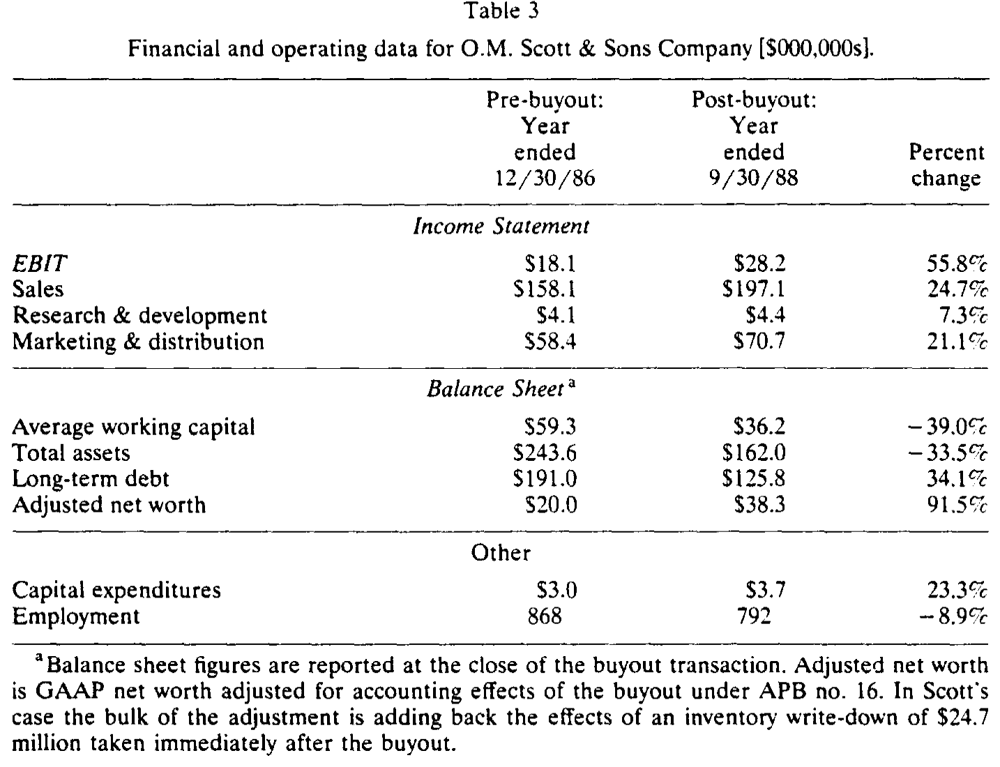
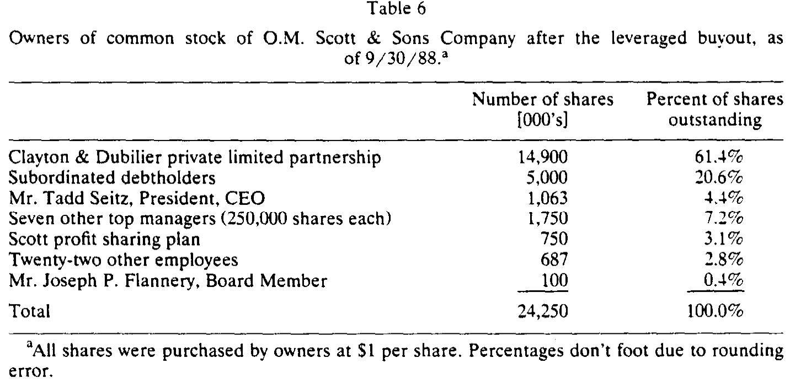
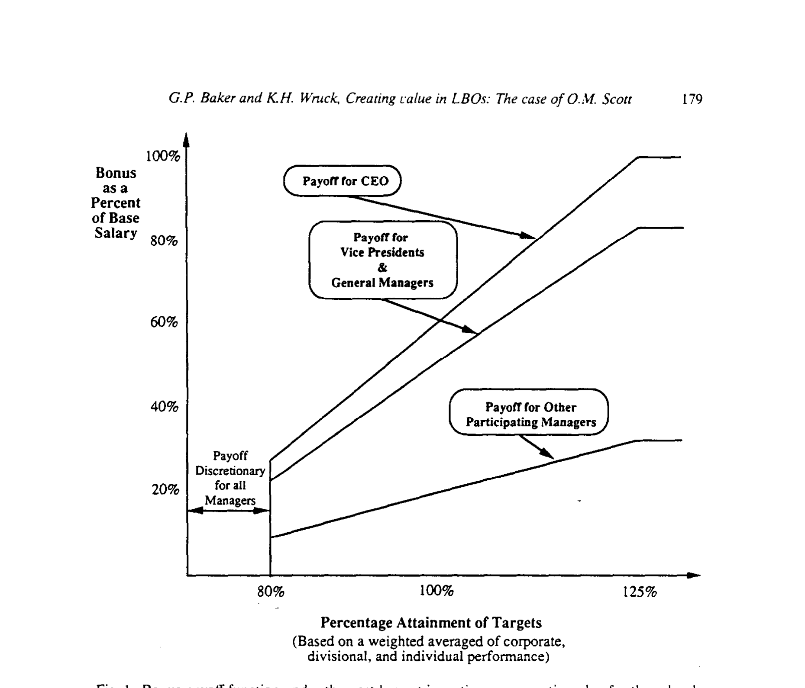
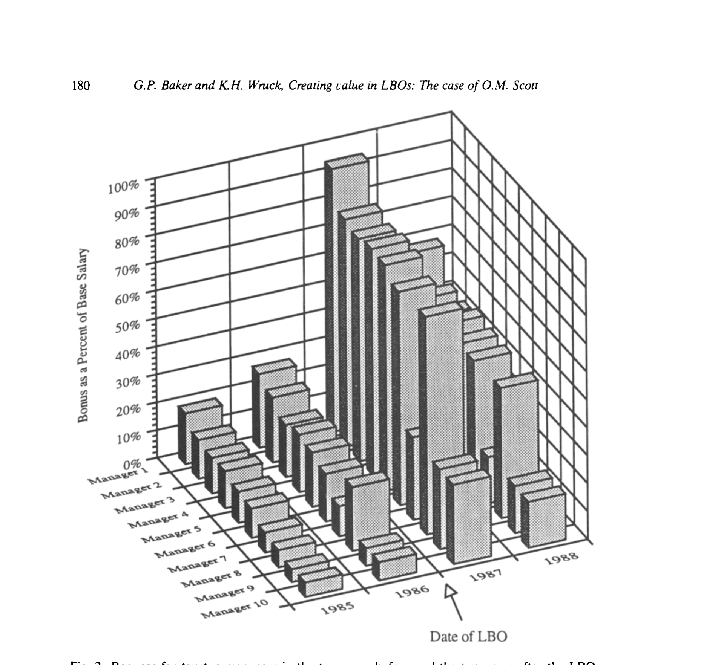
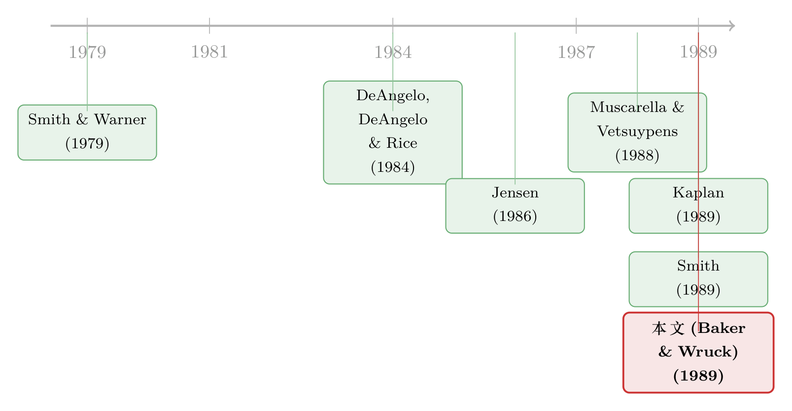

九成是债，他们却把公司「逼」成了一台现金机器
本文读的是 Baker & Wruck (1989, Journal of Financial Economics)：他们把一桩典型的杠杆收购——O.M. Scott & Sons——掰开揉碎，发现真正把「九成负债」转化为业绩的，不只是高杠杆和管理层持股这两味大样本研究里反复出现的药，还有一组被忽略的机制：限制「现金怎么生出来」的债务契约、一套强力的奖金计划、决策权的下放，以及经理人、收购方与董事会之间那张新的关系网。
1 一个看上去「平平无奇」的样本
先说一个让人有点泄气的事实。
到 1989 年，关于杠杆收购 (leveraged buyout, LBO) 的大样本研究已经攒下了一摞漂亮结论。Kaplan (1989) 看了 76 家、Muscarella & Vetsuypens (1988) 看了 72 家、Smith (1989) 看了 58 家，口径不同，结论却惊人地一致：收购之后，公司的经营利润在两到四年里平均上涨约 40%；而且这并不是靠砍研发、砍维修、砍营销「省」出来的。它们把这套结果解释成一个代理理论 (agency theory) 的胜利——高杠杆逼着经理人吐出现金，管理层持股又把经理人和股东绑到一条船上，于是激励对齐，业绩改善。
故事讲得很顺。可是，它们其实只看见了「结果」，没看见「过程」。
这些研究能告诉你，一家公司在 LBO 前后的 EBIT 涨了多少、库存压了多少天；却没有一个能告诉你，在 Marysville 那间工厂里，到底发生了什么，才让这些数字动起来。换句话说，大样本研究记录了财务结构与经营业绩之间的相关，却始终没能打开那个把二者连起来的黑箱。
于是一个自然的问题是：如果我们真的钻进一家公司里去看，会发现「高杠杆改善业绩」这条因果链，是靠哪几根齿轮咬合起来的？
Baker 与 Wruck 的回答，是去做一件大样本研究做不了的事——临床式 (clinical) 地解剖一个案例。他们选中的，是 O.M. Scott & Sons：美国最大的草坪护理产品生产商，1870 年靠卖农作物种子起家，1971 年被 ITT 收购，当了 14 年的子公司，又在 1986 年 12 月被 ITT 连同 Burpee 公司一起，通过一桩分拆式杠杆收购卖给了管理层和专做 LBO 的私募机构 Clayton & Dubilier（下称 C&D）。
挑 Scott 的妙处，恰恰在于它的「平平无奇」。收购后，Scott 的资本结构是 91% 的债；管理层和员工持有 17.5% 的股权；这两个数字，几乎正落在上面那几篇大样本研究报告的中位数上（Kaplan 的中位管理层持股是 22.6%，Smith 是 16.7%，中位杠杆约 90%）。它的业绩改善也典型——所以，任何在 Scott 身上看到的组织机制，都有理由相信在那一大批「中位数公司」里同样运转着，只是从未被记录下来。
我们先把那张「结果单」摆出来，再回头一根根去拆齿轮。收购后 21 个月（1986 年底到 1988 年 9 月底），Scott 的 EBIT 从 $18.1M 涨到 $28.2M，增幅 56%；销售额涨了 25%。而这同样不是省出来的：研发支出涨了 7%，营销与分销支出涨了 21%，资本开支涨了 23%。员工靠自然减员降了约 9%。最扎眼的是营运资本——平均营运资本占销售额的比重，从 37.5% 一路压到 18.4%，21 个月里释放了 $23.1M 的现金。

Table 3
数字很好看。但好看的数字到处都是，关键是：钱是从哪里、又是怎么挤出来的？
2 数据：一次贴着地面的解剖
在往下走之前，先交代这篇论文「怎么做的」，因为它的方法本身就是贡献的一部分。
Baker & Wruck 用的不是 Compustat，而是一手的、贴着地面的材料：对 C&D 合伙人、以及 Scott 各个层级管理者的大量访谈，公司的机密内部文件，招股说明书，ITT 的 10-K 报告，还有《华尔街日报》。被访谈者从 CEO、CFO、总法律顾问，一直到工厂经理、合同运营经理——名单里甚至有一位「营运资本工作组」的负责人。文中引用的机密数据（包括访谈原话）都经公司授权发表；还有一些太敏感、不能公开的数据，作者只能转述结论。
这是一种几乎要「住进公司」才能做出来的研究。它的样本量是 1，外部效度天然受限；但它换来的，是大样本永远拿不到的分辨率——你能听见经理人自己说，他在收购那天把妻子的小生意卖了，因为「买 Scott 股票带来的杠杆，已经是他们能承受的全部风险」。
3 真正关键的一步：契约管的不是「还多少」，而是「怎么还」
现在进入全文的核心。
收购之后，Scott 要还的债，远超它收购前的现金流能力。第一年利息支出 $15M，第二年 $18.5M；而收购前一年（1986），Scott 的 EBIT 才不过 $18.1M。光是利息，就几乎吃掉了它过去的全部经营利润——这还没算上从 1989 年起逐年到来的本金偿还和偿债基金 (sinking fund) 支付，1994 年那一档更是高达 $28M。
这就是「高杠杆」那根鞭子。它确实会逼着经理人去拼命生出现金——可问题恰恰出在这里。
当还债的压力大到这个程度，一个理性的、却只顾眼前的经理人，完全可以靠毁掉公司长期价值的方式来生出现金：把研发砍光、把维修停掉、把能卖的资产贱卖、甚至借一笔钱给自己发一笔清算式股利。这些动作短期内都能挤出现金还债，却会让公司——以及债权人自己——在长期受损。
所以，仅有高杠杆是不够的，甚至是危险的。如果故事到「杠杆逼吐现金」就结束，那它和「杀鸡取卵」并没有本质区别。大样本研究只看到「研发没被砍、维修没被停」的结果，却没追问：是什么约束住了经理人那只想砍研发、想卖资产的手？
Baker & Wruck 的答案是：债务契约 (debt covenants)。而且，是一组设计得相当精巧的契约。
它的逻辑可以这样一层层看：
首先，它锁死了「用坏办法生现金」这条路。 Scott 的银行信贷协议规定：除了已经报废或过时、且价值低于 $500,000 的资产，其他一概不许卖；不许并购、不许改变公司结构——也就是说，公司被间接地强制留在原来的生意里。给股东派现被禁止，再发新债也被禁止。次级债的契约稍松，但要派现得满足一长串苛刻条件，卖掉某个业务板块所得的 75% 必须拿去还债。
接着，它也锁死了「把多余的现金乱花」这条路。 资本开支不是由经理人自由决定，而是被一张逐年的金额表卡死。一旦达到资本开支上限，多出来的现金只有三个去处：留着、用于正常经营、或者提前还债——不能拿去并购，也不能分给股东。
把这两头一夹，结论就出来了：
还债的现金，主要只能来自经营或增发股票——不能来自变卖资产、不能来自吞并一家现金充裕的公司、更不能来自再举新债。于是，「高杠杆 + 这组契约」合在一起，恰好以一种不损害公司长期经营的方式，缓解了自由现金流问题。
这正是 Jensen (1986) 自由现金流理论里那把双刃剑被「驯服」的方式。高杠杆解决的是「现金太多、容易被乱花」的病；可它本身又会催生「为还债而自残」的新病。Scott 的契约，等于在逼公司吐现金的同时，把吐现金的通道牢牢限定在「把生意做得更好」上。（关于自由现金流这把双刃剑本身，可参见《现金为什么一定要「还」出去？——四十年后，重读 Jensen 的自由现金流》。）
还有一层：契约里那些会计指标——最低净资产、最低流动比率、每个季度末必须达到的调整后经营利润和利息保障倍数——它们更像是一组预警灯。哪怕 Scott 此刻还付得起利息，只要触碰其中一条，就构成「技术性违约」(technical default)，把经理人和银行家重新拉到谈判桌前。而违约对经理人绝不是小事：Gilson (1989) 发现，陷入财务困境的公司里，有 44% 的 CEO 会在恢复过程中丢掉饭碗。
值得玩味的是，这些约束可以被放松——只要经理人能说服贷款人，某个被契约禁止的项目其实会增加公司价值，贷款人就有动力网开一面，因为这同样抬高了他们债权的价值。事实上，尽管契约白纸黑字禁止并购，Scott 的贷款人后来还是同意它斥资 $111M 收购了 Hyponex 这家园艺草坪公司。契约不是一道死墙，而是一张可以重新谈判的桌子——这恰恰是它高明的地方：它把决策权从「经理人单方面说了算」，挪到了「经理人必须说服债权人」的对赌结构里。
这套「用债务契约把经营纪律焊进公司」的逻辑，在 Wruck 后来参与的另一桩经典案例 Sealed Air 里被推向了极致——一家根本不缺钱的公司，主动借了九倍的债来「逼」自己脱胎换骨（参见《九倍的债，没人逼，他偏要借》）。Scott 是这条思路的「自然实验版」，Sealed Air 则是「主动服药版」。
4 激励：让经理人「自己想」去生现金
契约管住了「不许做什么」。但一家公司不能只靠禁令运转——你还得让经理人主动去把生意做好。这就轮到第二根齿轮：激励与薪酬。
第一块是管理层持股。这里有个容易被误读的细节：股权的最终分配，根本不是管理层「逼」出来的。ITT 通过密封竞价 (sealed bid auction) 卖 Scott，赢家拿 100% 股权，八家竞标者里有七家是收购基金；管理层在成交前完全无法和 C&D 谈判，甚至 C&D 在管理层心里一度是「最不喜欢的买家」。是 C&D 在成交后，主动坚持让经理人买股，而且必须用自己的钱、不能用公司的钱。用 Scott 总裁 Tadd Seitz 的话说，C&D 当初不是他们的首选——「不是怀疑他们的本事，是觉得没那个化学反应」，但偏偏是 C&D 在竞标里看到了 Scott 最大的价值。
最终的股权表是这样的：

Table 6
24,250,000 股，每股 $1。C&D 的私募基金持 61.4%，次级债权人持 20.6%，剩下约 17% 落到 Scott 员工手里。八位高管合计掏了 $2,812,500，占 12%；Seitz 一人持 4.4%，另外七位高管各持 1%。为了买股，经理人作为一个群体借了 $2,531,250——这笔钱虽然不是从 Scott 借的，却由公司担保。持股，对他们而言是一次个人风险的陡增，而这正是 C&D 想要的：它把这套股权结构，看成「能给经理人最优激励」的结构。
第二块，也是更被大样本研究忽略的，是一套强力的奖金计划。收购之后，Scott 引入了一份激励性奖金合约，奖金随经营业绩呈一种分段、且高度敏感的形状——业绩跨过门槛后，奖金以陡峭的斜率上升。

Figure 1: Bonus payoff function under the post-buyout incentive compensation plan for three levels
这套计划的威力，直接写在了经理人的钱包上。把收购前两年和收购后两年，前十位经理人拿到的奖金摆在一起看，差异是肉眼可见的——奖金不再是一份温吞的年终福利，而成了一根紧绷的、和现金类业绩指标死死挂钩的弦。

Figure 2: Bonuses for top ten managers in the two years before and the two years after the LBO
把持股和奖金合起来看，激励的方向被设计得很清楚：奖金基于现金类的业绩指标，给经理人「去生现金」的动力；而股权和契约，又拦住他们用损害长期价值的方式去生现金。 两者一推一拦，正好咬合。
这也解释了为什么 Scott 能在还债压力最大的时候，营运资本反而压得最狠却没伤筋动骨：那个专门成立的「营运资本工作组」，把营运资本占销售额的比重从 37.5% 砍到 18.4%——这不是砍研发那种「自残式」节流，而是把过去躺在应收和库存里的现金，真真切切地管出来了。
5 监督：经理人、收购方与董事会的新三角
第三根齿轮，是经理人被监督和建议的方式变了。
在 ITT 旗下时，Scott 是一家巨型综合集团里的全资子公司，决策层层上报。收购之后，C&D 的合伙人进了董事会，担任董事长和联络人，密切地盯着经营。这与 ITT 时代那种「集团总部远程遥控」截然不同——董事会规模小、与经营贴得近、且董事自己也通过在 C&D 基金里的大额投资而持有 Scott 的股票。换句话说，盯着经理人的那个人，自己也是个老板。
于是组织被重构了：决策权下放、决策方式去中心化 (decentralization)，经理人获得了选择具体项目的自由（契约只卡总额，不指定项目），同时又被一个利益与之对齐、却离得足够近的董事会盯着。股权与董事会的紧密监督，把经理人和股东对齐；高杠杆与现金类奖金，给经理人生现金的动力；契约与股权，又防止经理人做出长期损害公司的事。 这三组力，构成了 Baker & Wruck 想讲的那个完整的故事。
回头看，大样本研究并没有错——它们看到的「高杠杆 + 管理层持股 → 业绩改善」是真的。只是它们把中间那段省略成了一个箭头。Baker & Wruck 做的，是把这个箭头还原成一台由契约、激励、监督三组齿轮咬合而成的机器。
6 文献脉络
这条研究线，可以顺着「债务到底在公司里扮演什么角色」一路看下来。
最早，债务契约被当作一个纯粹的债权人保护问题：Smith & Warner (1979) 系统地把股东能损害债权人利益的动作分成四类——资产替换、债权稀释、投资不足、过度派现——并论证契约如何逐一封堵。这是 Baker & Wruck 整套「契约约束」分析的理论地基。
接着，研究的重心转向了控制权与去公众化。DeAngelo, DeAngelo & Rice (1984) 研究公司私有化中的少数股东与股东财富；而真正点燃这条线的，是 Jensen (1986) 的自由现金流理论——它把「债务」从一个被动的融资工具，重新解释成一种主动的治理机制：高杠杆通过强制吐出现金，抑制经理人乱花钱的代理成本。

然后，一批大样本 LBO 研究接踵而至：Muscarella & Vetsuypens (1988) 研究反向 LBO 的效率与组织结构，Kaplan (1989) 与 Smith (1989) 用数十家公司的样本，记录了收购后经营业绩的系统性改善，并把它解释为代理理论的证据。Smith (1989) 尤其细致地证明，业绩改善不是靠削减研发或维修，而且营运资本被更紧地管理——应收天数和库存都显著下降（这与本文 Scott 的发现高度呼应；亦可参见《买断之后，效率从哪儿来？——58 家公司换了主人之后的现金流》）。
但真正关键的一步，是 Baker & Wruck (1989) 站到了这批研究的「内部」。大样本回答了「LBO 后业绩有没有改善、改善多少」；本文则用一个临床案例回答「为什么、怎么改善」——把那些大样本看不见的组织机制（契约如何约束现金生成方式、奖金计划的具体形状、决策权的下放、董事会的重构）一一记录下来。它和 Gilson (1989) 关于困境中 CEO 去留的证据、以及后来一整条「财务困境的组织后果」文献，共同构成了 LBO 研究从「测量结果」走向「打开黑箱」的转折。
评论与延伸（Q&A + 研究方向）
(a) 几个可能的疑问
Q：一个样本量为 1 的案例研究，凭什么发表在顶刊、又凭什么能下一般性结论？
它的合法性恰恰建立在「Scott 是中位数」这件事上。收购后
91%的杠杆、17.5%的管理层持股、以及典型的业绩改善，都落在大样本的中位数附近——这让作者有理由相信，在 Scott 身上观察到的组织机制（契约、奖金、监督），同样在那一大批「平均的」LBO 里运转，只是从未被记录。案例研究换来的不是外部效度，而是分辨率：它能看见箭头中间的齿轮，这是回归做不到的。
Q：这和「高杠杆逼吐现金」的 Jensen 自由现金流故事，到底有什么不同？
Jensen 的故事只讲了一半：债务逼经理人吐现金。本文补上了危险的另一半——逼吐现金本身可能催生「为还债而自残」的新代理问题（砍研发、贱卖资产、借钱发清算股利）。Scott 的真正创新，是用债务契约把「生现金的通道」限定在经营改善上。没有契约，高杠杆完全可能是价值毁灭的。
Q：业绩改善会不会只是「会计幻觉」或行业景气，而非真的组织改善？
这是案例研究最难排除的威胁，本文也没有反事实对照组。但有几点缓解：研发
+7%、营销+21%、资本开支+23%同时上升，说明不是靠削减费用粉饰利润；营运资本占销售额从37.5%压到18.4%有专门工作组的过程证据支撑。不过「如果不做 LBO，Scott 在同样行业景气下会怎样」这个问题，案例方法天然无法回答。
Q：管理层持股 17.5%，真的算「重仓」吗？会不会激励有限？
关键不在比例，而在个人风险的绝对增量。经理人借了
$2,531,250来买股，且由公司担保、用自己的钱——CEO 把家庭资产压上去的程度，已是「能承受的全部风险」。对一个中层而言，1%的股权叠加杠杆借款，足以让他的个人财富与公司命运高度绑定。
Q：契约这么严，会不会反而捆住了经理人的手脚，导致投资不足？
理论上会，但本文给出了一个关键的「安全阀」：契约可以重新谈判。当经理人能证明某个被禁动作（如收购 Hyponex）会增加公司价值，贷款人有动力放行，因为这也抬高其债权价值。所以契约约束的是「未经审视的自由」，而非「所有投资」——它把决策从单方面变成了对赌。
Q：C&D 主动坚持让经理人持股、还限定用自己的钱，这说明了什么？
说明在收购方眼里，管理层持股不是给经理人的「福利」或谈判筹码，而是一种精心设计的激励技术。ITT 在卖出时完全没考虑管理层偏好（接受了管理层最不喜欢的买家的报价），C&D 却反过来「逼」经理人买股——最终的股权结构，是 C&D 认为「能给经理人最优激励」的结构，而非讨价还价的产物。
(b) 几个可能的研究问题与提案
1. 把「现金生成方式」契约写进大样本，看它是否解释 LBO 的截面差异
【经济故事】本文的核心论点是：约束「现金怎么生」的契约，决定了高杠杆是创造价值还是毁灭价值。那么在一个 LBO 大样本里，契约严格度（资产处置限制、资本开支表、派现禁令）是否能解释「为什么有的 LBO 脱胎换骨、有的只是勒紧裤腰」？ 【可行性】中。需要手工编码 LBO 贷款协议的契约条款（可从 SEC 文件、DealScan、贷款招股书获取），与收购后经营业绩匹配。识别上的难点是契约严格度的内生性——更可能改善的公司或许本就签得更松/更严，需用贷款人、年份、行业固定效应，或以利率环境作为契约松紧的外生变动来缓解。
2. 债务契约与研发/资本开支：高杠杆下「自残式节流」是否真的被契约挡住了
【经济故事】Scott 在还债压力最大时研发反而
+7%、资本开支+23%，本文归因于契约把现金生成限定在经营改善上。能否在更广样本上检验：限制资产处置、设定资本开支下限的契约，是否系统性地降低了高杠杆公司「砍研发、停维修」的概率？ 【可行性】中高。资本开支与研发在 Compustat 可得，契约信息需从贷款数据库提取。可用「同一公司在不同契约结构下」或「契约触发技术性违约前后」做事件研究，识别相对干净。
3. 把「公司债契约保护」与外资债权人结合：谁更依赖契约约束借款人？
【经济故事】Scott 的契约本质是债权人对「现金生成方式」的控制权。一个自然延伸是：信息劣势更大的债权人（如外资持有人、远程的机构债权人）是否在契约上要求得更严，以替代他们缺失的近距离监督？这把本文的「监督—契约替代关系」推广到了信用市场的持有人结构。 【可行性】中。需要公司债发行的契约强度数据（Mergent FISD 有部分契约字段）与持有人结构（保险公司 NAIC、基金 13F、外资持有数据）匹配。识别挑战在于持有人结构与契约可能由同一套发行人特征共同决定，需要工具或自然实验（如指数纳入、评级变动引发的持有人结构外生变化）。
4. 技术性违约作为「重新谈判」事件：契约放松如何影响投资与价值
【经济故事】本文强调契约可被重新谈判（Hyponex 案）。技术性违约把经理人和债权人拉回谈判桌——这一刻，控制权从经理人向债权人转移。这种转移如何改变随后的投资、资产处置与公司价值？是「债权人帮公司纠偏」，还是「债权人攫取租金」？ 【可行性】中高。技术性违约（covenant violation）在 Compustat/DealScan 可识别，已有成熟文献（如 Chava-Roberts 一脉）。可做违约前后的 DiD，看投资、资产出售、并购行为的变化，并区分价值创造与租金转移。
参考文献
DeAngelo, H., L. DeAngelo, and E. Rice (1984). Going private: Minority freezeouts and stockholder wealth. Journal of Law and Economics XXVII, 367–401.
Gilson, S. (1989). Management-borne bankruptcy costs: Evidence on executive turnover during corporate financial distress. Working paper, University of Texas, Austin.
Jensen, M.C. (1986). Agency costs of free cash flow, corporate finance, and takeovers. American Economic Review 76, 323–329.
Kaplan, S. (1989). Management buyouts: Evidence on taxes as a source of value. Journal of Finance 44, 611–632.
Muscarella, C., and M. Vetsuypens (1988). Efficiency and organizational structure: A study of reverse LBOs. Working paper, Southern Methodist University, Dallas.
Smith, A. (1989). Corporate ownership structure and performance: The case of management buyouts. Working paper, University of Chicago.
Smith, C.W., and J.B. Warner (1979). On financial contracting: An analysis of bond covenants. Journal of Financial Economics 7, 117–161.